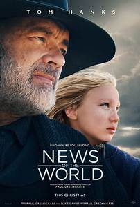
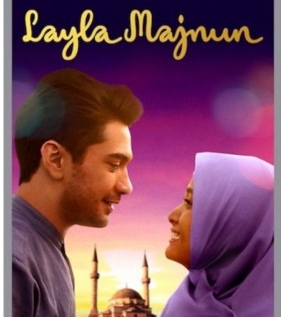

| Film | Tanggal Tayang | Pemeran | Sinopsis |
|---|---|---|---|
|  News Of The World |
10 Februari 2021 |
|
Film News of the World diangkat dari novel terlaris dan finalis National Book Award karya Paulette Jiles, film ini kisahkan seorang veteran Perang Saudara yang bepergian dari kota ke kota untuk menyampaikan berbagai berita. Dia pun harus melakukan perjalanan berbahaya melintasi Texas demi mengantarkan seorang gadis yatim piatu ke rumahnya yang baru. |
|  Layla Majnun |
11 Februari 2021 |
|
Film Layla Majnun menceritakan tentang sosok wanita religius, mandiri dan berpendidikan tinggi bernama Layla (Acha Septriasa).Layla jatuh cinta kepada Samir (Reza Rahadian), seorang pria berkebangsaan Azerbaijan yang pintar dan romantis. Terjebak dalam sebuah perjodohan dengan pria bernama Ibnu (Baim Wong), Layla kini berada di antara dua pilihan, mengikuti kata hatinya atau menjalani pernikahan yang tidak diinginkannya. |
Hello, Me |
17 Februari 2021 |
|
Hello, Me akan menceritakan tentang seorang gadis bernama Ban Ha Ni yang diperankan oleh Choi Kang Hee. Seorang gadis berumur 37 tahun yang bertemu dengan dirinya sendiri yang datang dari masal lalu. Saat dirinya berumur 17 tahun yang dibintangi oleh Lee Re. |
Malcolm & Marie |
5 Februari 2021 |
|
film Malcolm & Marie berkisah tentang pasangan kekasih, Malcolm (John David Washington) dan Marie (Zendaya) yang terperangkap di rumah saat berusaha untuk mengusir setan dalam hubungan mereka. Malcolm adalah sutradara pendatang baru yang sangat menjanjikan |
Geez & Ann |
25 Februari 2021 |
|
Geez & Ann menceritakan tentang perjalanan anak muda yang saling mencari arti sebuah komitmen. Ann (Hanggini) merupakan seorang gadis mandiri yang jatuh cinta kepada seorang laki-laki bernama Geez (Junior Roberts). Geez sendiri termasuk orang yang karakternya cenderung misterius. Pertemuan tidak sengaja mereka membawa keduanya berhadapan dengan berbagai masalah yang cukup pelik. Salah satunya adalah hubungan jarak jauh yang harus mereka jalani. |